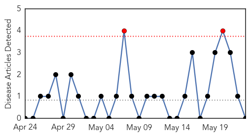
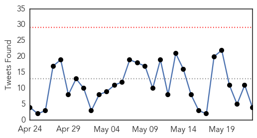
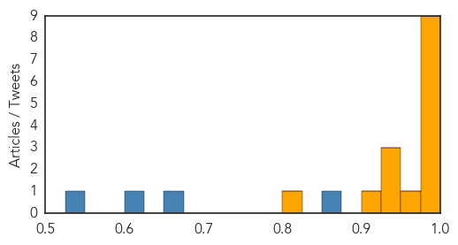

Chikungunya
30-Day Web Trend
2 alerts, 0 warnings

30-Day Twitter Trend
0 alerts, 0 warnings

Article Locations

Article Confidences

Top Articles:
-
No articles found for May 23, 2015
Top Tweets:
-
No tweets found for May 23, 2015
Ebola
30-Day Web Trend
0 alerts, 1 warnings

30-Day Twitter Trend
0 alerts, 0 warnings

Article Locations

Article Confidences
Top Articles:
- 0.999
- Ebola – let us call a spade a spade
- 0.998
- Ebola remains in small Guinea villages, where community resistance is a challenge
- 0.998
- Ebola Outbreak: Liberia declared “Ebola-free”
- 0.996
- UN health agency responds to Ebola spike
- 0.996
- Genomics lab in Liberia helps scientists monitor Ebola virus
- 0.994
- NRI Researcher Helps In Ebola Vaccine Trials
- 0.991
- UN health agency responds to Ebola spike
- 0.989
- Ebola: Anxiety as volunteers return today
- 0.987
- Ebola crisis should teach us a lesson
- 0.969
- All Cuban medical workers return home from W Africa after Ebola fight
- 0.949
- World Health Assembly gives WHO green light to reform emergency and response progamme - World
- 0.938
- World Health Assembly gives WHO green light to reform emergency and response programme
- 0.933
- Ebola flares in Guinea; handling of bodies cited
- 0.921
- Liberian President Ellen Sirleaf Johnson in Abidjan for talks on fixing Africa's Primary Healthcare
- 0.807
- May 22 news: Salmonella outbreak, poverty and vision loss, California oil spill
Top Tweets:
- 0.973
- The last Ebola survivor of his team - World Health Organization http://t.co/NEsvA767Sf ebola EVD
- 0.917
- George Galloway sent package 'infected with deadly virus EBOLA' - http://t.co/pRfx5WTR7b http://t.co/3cllvoprY7 ebola EVD
- 0.909
- WHO approves $100 million emergency fund after Ebola response criticized - CTV News http://t.co/eHCsod7Hpa ebola EVD
- 0.757
- The last Ebola survivor of his team - World Health Organization http://t.co/qNTDAn1SYY
- 0.746
- RT: @neil_bodie BREAKING NEWS!!!! GOVERMENT OFFICAL GETS ‘infected with EBOLA virus IN MAIL http://t.co/VSwuJfodAK … ebo…
- 0.700
- RT: The last Ebola survivor of his team - World Health Organization http://t.co/qNTDAn1SYY
- 0.676
- Irish troops home safe after their brave battle against deadly Ebola - Irish Independent http://t.co/LI8wNysOqP ebola EVD
- 0.640
- 22 May news on avianflu avianinfluenza Ebola EbolaResponse MERS NepalQuake WHA68 are here: http://t.co/Np9HlY25KI
- 0.614
- WHO Director-General was asked to set up a review committee under the International Health Regulations to assess IHR in regards to Ebola
- 0.545
- RT: GeorgeGalloway sent package ‘infected with EBOLA virus http://t.co/B7BepvEP10 http://t.co/0wmOU6punL
- 0.543
- George Galloway sent package 'infected with deadly virus EBOLA' - http://t.co/9XRKVe7ONb http://t.co/BvYiD5POmK